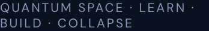

You can't learn qubits from slides.
176 topics · workbench · tutor
Learn · Build · Collapse
176 topics · 20 domains · 8 learning paths
13 templates · 11 challenges
LEARNING PATHS
Eight routes to quantum fluency
prerequisite validation · seven-stage Virtual Lab · BKT mastery tracking
bell template · 2 gates · depth 2 · 1 entangling
MEASUREMENT
|00⟩ 50.0% |11⟩ 50.0%
8,192 shots · ideal
YOU
Chinnu answers from your circuit
Socratic tutor · grounded in this circuit
Circuit, state and analysis — sent server-side.
CHINNU
PRACTICE
13 templates · 11 challenges
auto-graded · scaffolds, never solutions · 12 badges · XP and streaks
PROGRESS & DATA
Hake learning gain · mastery map
CSV / JSON export for educators · no database required
Your circuit leaves as runnable SDK code.
OpenQASM 2.0 · Qiskit · Cirq · PennyLane
VERIFICATION
147 automated checks · 28 oracle checks
120 Vitest (statevector, noise, feed-forward, QASM, exporters, mastery)
12 API tests against the independent NumPy oracle
15 Qiskit 2.5.2 reference-algorithm tests (Bell, GHZ, QFT, QPE, teleportation …)
28/28 NumPy oracle checks · TypeScript strict · production build clean
Browser engine is the fast path; FastAPI runs a deliberately independent NumPy implementation of the same contract.

chinmayrerc.github.io/q-matrix
github.com/ChinmayRERC/q-matrix · VTU-QFF-HC-0024